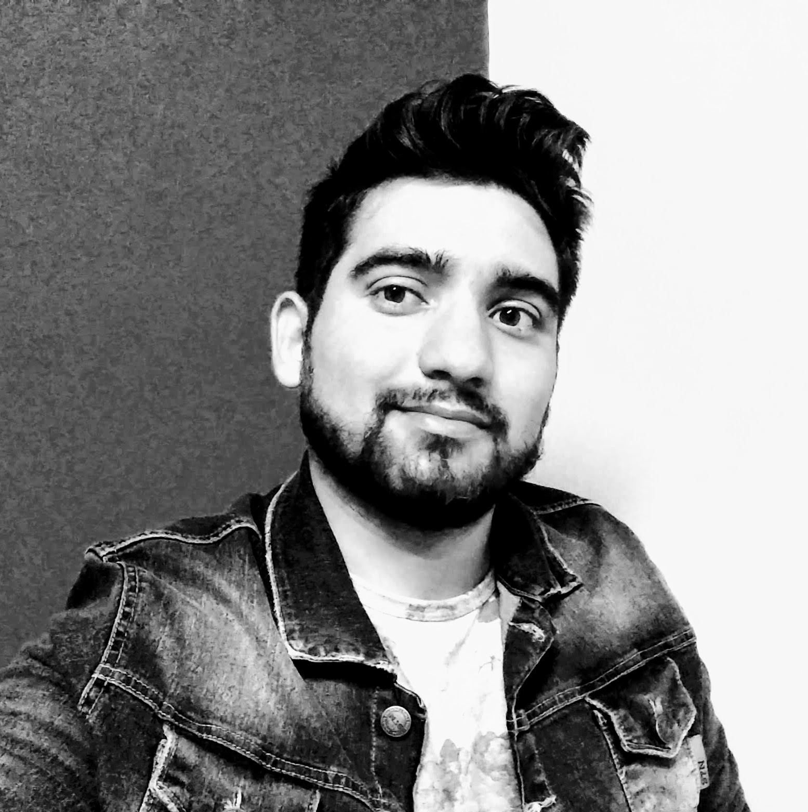

Informacion Personal
Perfil
Me defino como una persona proactiva, con interés por adquirir nuevos conocimientos y habilidades, que le gusta resolver nuevos retos y situaciones problemáticas.
Poseo conocimientos en el manejo de diversas máquinas herramientas, lectura y comprensión de planos eléctricos o de gas, manejo de software de diseño como Autocad y CorelDraw
Actualmente trabajo en el área de mantenimiento de de una empresa que brinda servicio de gas natural a domicilios e industrias.
Para poder desarrollar mi trabajo debo organizar a un grupo de personas encargadas de realizar tareas de excavación, para poder acceder a la red de Gas, coordinar el trabajo con los soldadores especialistas, y realizar informes diarios de las tareas realizadas.
Dicho tipo de trabajo me ha llevado a adquirir habilidades en el manejo de grupos de personas y resolver situaciones problemáticas de riesgo de manera eficiente, así también como el buen trato con los clientes a los cuales se le brinda el servicio.
Aunque no concluí mis estudios universitario como diseñador industrial, el tiempo y los conocimientos adquiridos durante mis 3 años de cursado, me llevaron a comprender la importancias de las formas de los objetos y cómo estos se comunican con sus usuarios, a trabajar con metodologías de desarrollos de proyectos grupales y las diferentes etapas que lo componen (investigación, desarrollo y puesta punto, etc.), así como la importancia de ofrecer un buen producto.
Me gusta emprender, ayudar a otros con sus proyectos y enriquecer mi formación como persona y profesional.
Idiomas
- Español, lenguaje nativo
- Inglés, nivel medio